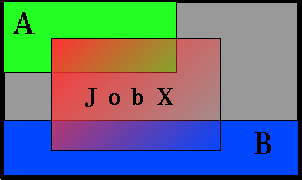

7.1.1 Reservation Overview
Every reservation consists of 3 major components, a set of resources, a timeframe, and an access control list. Additionally, a reservation may also have a number of optional attributes controlling its behavior and interaction with other aspects of scheduling. All reservation attributes are described below.
7.1.1.1 Resources
Under Maui, the resources specified for a reservation are specified by way of a task description. Conceptually, a task can be thought of as an atomic, or indivisible, collection of resources. The resources may include processors, memory, swap, local disk, etc. For example, a single task may consist of one processor, 2 GB of memory, and 10 GB of local disk. A reservation consists of one or more tasks. In attempting to locate the resources required for a particular reservation, Maui will examine all feasible resources and locate the needed resources in groups specified by the task description. An example may help clarify this concept:
Reservation A requires 4 tasks. Each task is defined as 1 processor and 1 GB of memory.
Node X has 2 processors and 3 GB of memory available
Node Y has 2 processors and 1 GB of memory available
Node Z has 2 processors and 2 GB of memory available
In attempting to collect the resources needed for the reservation, Maui would examine each node in turn. Maui finds that Node X can support 2 of the 4 tasks needed by reserving 2 processors and 2 GB of memory, leaving 1 GB of memory unreserved. Analysis of Node Y shows that it can only support 1 task reserving 1 processor and 1 GB of memory, leaving 1 processor unreserved. Note that the unreserved memory on Node X cannot be combined with the unreserved processor on Node Y to satisfy the needs of another task because a task requires all resources to be located on the same node. Finally, analysis finds that node Z can support 2 tasks, fully reserving all of its resources.
Both reservations and jobs use the concept of a task description in specifying how resources should be allocated. It is important to note that although a task description is used to allocate resources to a reservation, this description does not in any way constrain the use of those resources by a job. In the above example, a job requesting resources simply sees 4 processors and 4 GB of memory available in reservation A. If the job has access to the reserved resources and the resources meet the other requirements of the job, the job could utilize these resources according to its own task description and needs.
Currently, the resources which can be associated with reservations include processors, memory, swap, local disk, initiator classes, and any number of arbitrary resources. Arbitrary resources may include peripherals such as tape drives, software licenses, or any other site specific resource.
7.1.1.2 TimeFrame
Associated with each reservation is a timeframe. This specifies when the resources will be reserved or dedicated to jobs which meet the reservation's ACL. The timeframe simply consists of a start time and an end time. When configuring a reservation, this information may be specified as a start time together with either an end time or a duration.
7.1.1.3 Access Control List
A reservation's access control list specifies which jobs can use a reservation. Only jobs which meet one or more of a reservation's access criteria are allowed to use the reserved resources during the reservation timeframe. Currently, the reservation access criteria include the following: users, groups, accounts, classes, QOS, and job duration.
7.1.1.4 Job to Reservation Mapping
While a reservation's ACL will allow particular jobs to utilize reserved resources, it does not force any job to utilize these resources. With each job, Maui attempts to locate the best possible combination of available resources whether these are reserved or unreserved. For example, in the figure below, note that job X, which meets access criteria for both reservation A and B, allocates a portion of its resources from each reservation and the remainder from resources outside of both reservations.
Although by default, reservations make resources available to jobs which meet particular criteria, Maui can be configured to constrain jobs to only run within accessible reservations. This can be requested by the user on a job by job basis using a resource manager extension flag or can be enabled administratively via a QoS flag. For example, assume two reservations were created as shown below.
> setres -g staff -d 8:00:00 'node[1-4]'
reservation 'staff.1' created on 4 nodes
> setres -u john tasks==2
reservation 'john.1' created on two nodes
If the user john, who happened to also be a member of the group staff, wanted to force his job to run within a particular reservation, he could do so using the FLAGS resource manager extension. Specifically, in the case of a PBS job, the following submission would force the job to run within the staff.1 reservation.
> qsub -l nodes=1,walltime=1:00:00 -W x=FLAGS:ADVRES:staff.1 testjob.cmd
Note that for this to work, PBS will need to have resource manager extensions enabled as described in the PBS Resource Manager Extension Overview. If the user simply wants the job to run on reserved resources but does not care which, he could submit the job with
> qsub -l nodes=1,walltime=1:00:00 -W x=FLAGS:ADVRES testjob.cmd
To enable job to reservation mapping via QoS, the QoS flag 'USERRESERVED' should be set in a similar manner.
7.1.1.5 Reservation Specification
There are two main types of reservations which sites typically deal with. The first, administrative reservations, are typically one time reservations created for special purposes and projects. These reservations are created using the setres command. These reservations provide an integrated mechanism to allow graceful management of unexpected system maintenance, temporary projects, and time critical demonstrations. This command allows an administrator to select a particular set of resources or just specify the quantity of resources needed. For example an administrator could use a regular expression to request a reservation be created on the nodes 'blue0[1-9]' or could simply request that the reservation locate the needed resources by specifying a quantity based request such as 'TASKS==20'.
The second type of reservation is called a standing reservation. It is of use when there is a recurring need for a particular type of resource distribution. For example, a site could use a standing reservation to reserve a subset of its compute resources for quick turnaround jobs during business hours on Monday thru Friday. Standing reservations are created and configured by specifying parameters in the maui.cfg file. The Standing Reservation Overview provides more information about configuring and using these reservations.
7.1.1.6 Reservation Behavior
As mentioned above, a given reservation may have one or more access criteria. A job can utilize the reserved resources if it meets at least one of these access criteria. It is possible to 'stack' multiple reservations on the same node. In such a situation, a job can only utilize the given node if it meets at least access criteria of each active reservation on the node.
7.1.1.7 Other Reservation Attributes
Charge Account - Allows a reservation to charge for resources which are dedicated to the reservation but not used by any job.
See also:
N/A